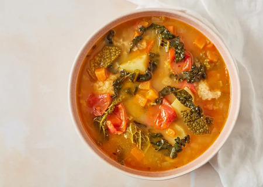

Nonna's Delicious Ribollita

Ribollita is one of Tuscany’s many famous bread soups.
While typically known as a "poor" or "peasant" dish, Ribollita is capable of becoming something greater than the sum of its parts. Long-lasting, nourishing and absolutely delicious, this cheap soup will have you reheating over and over again.
Ingredients:
Canellini Beans
- 5 1/3oz of Cannelini Beans (soaked cold overnight)
- 1/2 an Onion, peeled and cut in half
- 4 Garlic Cloves, unpeeled and bashed
- 2 Bay Leaves, 2 Sprigs of Thyme and Salt
Ribollita
- olive oil
- 3 1/2oz of Stale Bread, torn into rough 3cm chunks
- 1tsp Fennel seeds
- 1 pinch of Chilli Flakes
- 1 diced Onion
- 1 Carrot, peeled and diced into 1cm cubes
- 2 Celery sticks, sliced
- 3 Garlic cloves, diced
- 3 Plum tomatoes, quartered
- 2 Medium potatoes, peeled and cut into sixths
- 3 Cavolo nero leaves, roughly chopped
- 2 Savoy cabbage leaves, sliced
- 1 Bay leaf, 1 sprig of rosemary and thyme, salt and pepper
Steps:
- Cook the cannellini beans in a pan of salted water with the onion, garlic, bay, thyme and a healthy pinch of salt for 45 minutes, or until just undercooked. Drain and reserve the cooking water. Discard the onion, garlic and herbs
- Add a splash of olive oil to a large, heavy-bottomed pan over a medium heat. Gently sweat the onion, garlic, carrot and celery with the herbs, chilli flakes, fennel and a pinch of salt until soft but without colour (about 10 minutes)
- Add the tomatoes and stir for a couple of minutes. Add the beans and reserved bean stock, topping up with water as needed. Simmer for 30 minutes
- After this time, add the potato, cavolo nero, savoy cabbage and bread and simmer for a further 15 minutes, or until the potato is cooked. Taste and season with salt and pepper
- For best results, chill the soup after cooking and reheat the next day. Serve with a generous drizzle of good quality extra virgin olive oil and freshly cracked black pepper
Congrats!
Nonna would be proud! You did an amazing job at the soup, at least I'm sure you did. With my expertise, things should've gone swimmingly...I hope so, anyway. Enjoy Nonna's Delicious Ribollita!
Back to Home?...or try another Recipe?
to the Homepage
to Mama's Lovely Zucchini Lasagna